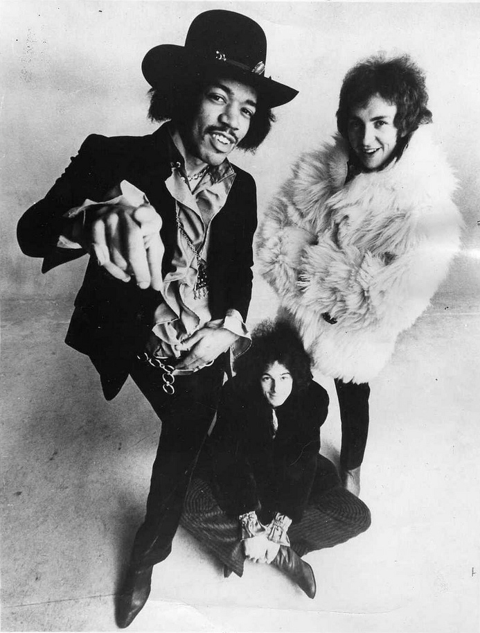

1968 music crowned the Beatles' Hey Jude as the year's biggest single.
It spent nine weeks at number one on the Billboard Hot 100, tying the longest unbroken run on record.
Sixteen different songs reached the top that year, and the Beatles held it for 11 weeks.
Listen to 1968 Music
25 of 1968's biggest hits are playable below, from Billboard's year-end top 100 for 1968.
Press play on any row, or use Play All to run the whole list.
| # | Title | Artist | Chart Peak | Genre |
|---|---|---|---|---|
| Hey Jude | The Beatles | No. 1, 9 wks | British Invasion | |
| Love Is Blue | Paul Mauriat | No. 1, 5 wks | Jazz & Easy Listening | |
| Honey | Bobby Goldsboro | No. 1, 5 wks | Pop & Brill Building | |
| (Sittin' On) The Dock of the Bay | Otis Redding | No. 1, 4 wks | Motown, Soul & R&B | |
| People Got to Be Free | The Rascals | No. 1, 5 wks | Pop & Brill Building | |
| Sunshine of Your Love | Cream | No. 5 | Psychedelic Rock | |
| This Guy's in Love with You | Herb Alpert | No. 1, 4 wks | Jazz & Easy Listening | |
| The Good, the Bad and the Ugly | Hugo Montenegro | No. 2 | Jazz & Easy Listening | |
| Mrs. Robinson | Simon & Garfunkel | No. 1, 3 wks | Folk Rock | |
| Tighten Up | Archie Bell & the Drells | No. 1, 2 wks | Motown, Soul & R&B | |
| Harper Valley PTA | Jeannie C. Riley | No. 1, 1 wk | Country (Nashville Sound & Bakersfield) | |
| Little Green Apples | O. C. Smith | No. 2 | Pop & Brill Building | |
| Mony Mony | Tommy James and the Shondells | No. 3 | Pop & Brill Building | |
| Hello, I Love You | The Doors | No. 1, 2 wks | Psychedelic Rock | |
| Young Girl | Gary Puckett & The Union Gap | No. 2 | Pop & Brill Building | |
| Cry Like a Baby | The Box Tops | No. 2 | Motown, Soul & R&B | |
| Stoned Soul Picnic | The 5th Dimension | No. 3 | Pop & Brill Building | |
| Grazing in the Grass | Hugh Masekela | No. 1, 2 wks | Jazz & Easy Listening | |
| Midnight Confessions | The Grass Roots | No. 5 | Pop & Brill Building | |
| Dance to the Music | Sly and the Family Stone | No. 8 | Motown, Soul & R&B | |
| The Horse | Cliff Nobles | No. 2 | Motown, Soul & R&B | |
| I Wish It Would Rain | The Temptations | No. 4 | Motown, Soul & R&B | |
| La-La (Means I Love You) | The Delfonics | No. 4 | Motown, Soul & R&B | |
| Turn Around, Look at Me | The Vogues | No. 7 | Pop & Brill Building | |
| Judy in Disguise (With Glasses) | John Fred & His Playboy Band | No. 1, 2 wks | Pop & Brill Building |

Table of Contents
- Listen to 1968 Music
- 1968 Music's Billboard Hot 100 Number Ones
- Key Albums Released in 1968
- Notable Events in 1968
- Genre Shifts in 1968 Music
- Play 1968 on the Radio Dial
- FAQ
1968 Music's Billboard Hot 100 Number Ones
Sixteen different songs reached the top of the Billboard Hot 100 in 1968.
The Beatles led the year with 11 weeks at number one across two songs.
That is more than twice the total of any other act.
| Title | Artist | Chart | Peak Date | Weeks at #1 in 1968 |
|---|---|---|---|---|
| Hello, Goodbye | The Beatles | Billboard Hot 100 | Dec 30, 1967 | 2 (3 in all) |
| Judy in Disguise (With Glasses) | John Fred and his Playboy Band | Billboard Hot 100 | Jan 20, 1968 | 2 |
| Green Tambourine | The Lemon Pipers | Billboard Hot 100 | Feb 3, 1968 | 1 |
| Love Is Blue | Paul Mauriat | Billboard Hot 100 | Feb 10, 1968 | 5 |
| (Sittin' On) The Dock of the Bay | Otis Redding | Billboard Hot 100 | Mar 16, 1968 | 4 |
| Honey | Bobby Goldsboro | Billboard Hot 100 | Apr 13, 1968 | 5 |
| Tighten Up | Archie Bell & the Drells | Billboard Hot 100 | May 18, 1968 | 2 |
| Mrs. Robinson | Simon & Garfunkel | Billboard Hot 100 | Jun 1, 1968 | 3 |
| This Guy's in Love with You | Herb Alpert | Billboard Hot 100 | Jun 22, 1968 | 4 |
| Grazing in the Grass | Hugh Masekela | Billboard Hot 100 | Jul 20, 1968 | 2 |
| Hello, I Love You | The Doors | Billboard Hot 100 | Aug 3, 1968 | 2 |
| People Got to Be Free | The Rascals | Billboard Hot 100 | Aug 17, 1968 | 5 |
| Harper Valley PTA | Jeannie C. Riley | Billboard Hot 100 | Sep 21, 1968 | 1 |
| Hey Jude | The Beatles | Billboard Hot 100 | Sep 28, 1968 | 9 |
| Love Child | Diana Ross & the Supremes | Billboard Hot 100 | Nov 30, 1968 | 2 |
| I Heard It Through the Grapevine | Marvin Gaye | Billboard Hot 100 | Dec 14, 1968 | 3 (7 in all) |
The Year-End Number One
The Beatles' Hey Jude reached number one on September 28 and stayed for nine weeks.
It also tops Billboard's year-end Hot 100 for 1968.
Paul Mauriat's instrumental Love Is Blue ranks second and Bobby Goldsboro's Honey third.
A Posthumous Number One
Otis Redding's (Sittin' On) The Dock of the Bay reached the top on March 16 for four weeks.
It was the first posthumous number one on the Hot 100, three months after his death in December 1967.
The year-end chart ranks it fourth.
How the Year Ended
Diana Ross and the Supremes took the top with Love Child on November 30 for two weeks.
Marvin Gaye's I Heard It Through the Grapevine followed on December 14.
It held number one for three weeks of 1968, and seven weeks in all.
Key Albums Released in 1968
Six albums stand out from 1968.
- Lady Soul, Aretha Franklin (released January 22, 1968).
- At Folsom Prison, Johnny Cash (recorded live January 13, 1968, and released May 6, 1968).
- Music from Big Pink, The Band (released July 1, 1968).
- Cheap Thrills, Big Brother and the Holding Company, Columbia Records (released August 12, 1968): eight nonconsecutive weeks at number one on Billboard's Top LPs chart.
- Electric Ladyland, The Jimi Hendrix Experience (released in the US on October 16, 1968).
- The Beatles, known as the White Album (released November 22, 1968).
Notable Events in 1968
- Johnny Cash recorded At Folsom Prison live at Folsom State Prison in California on January 13.
- Led Zeppelin played their first show on September 7, billed as the New Yardbirds. Read more on September 7
- Harper Valley PTA reached number one on September 21. Read more on September 21
- Hey Jude began its nine-week run at number one on September 28. Read more on September 28
- Big Brother and the Holding Company's Cheap Thrills hit number one on the album chart on October 12. Read more on October 12
- The Jimi Hendrix Experience's Electric Ladyland came out in the US on October 16. Read more on October 16
- Elvis Presley's comeback television special aired on December 3.
Genre Shifts in 1968 Music
1968 music was the year the instrumental and the soul single went mainstream.
By this site's genre tags, nine of the year-end top 25 were pop and Brill Building songs, including Honey, Mony Mony and Young Girl.
Motown, soul and R&B supplied seven, from Dock of the Bay to I Wish It Would Rain.
Jazz and easy listening added four, led by Love Is Blue and This Guy's in Love with You.
The British Invasion sent only Hey Jude, though it finished first.
Instrumentals Take Over the Top Ten
Paul Mauriat's Love Is Blue spent five weeks at number one.
Hugo Montenegro's The Good, the Bad and the Ugly peaked at number two and ranks eighth for the year.
Hugh Masekela's Grazing in the Grass reached the top on July 20 and ranks 18th.
Psychedelia and Folk Rock on AM Radio
The Doors' Hello, I Love You reached number one on August 3, and Cream's Sunshine of Your Love peaked at number five.
Both carried psychedelic rock onto the Hot 100.
Simon and Garfunkel's Mrs. Robinson took the top on June 1, a high point for folk rock.
Soul and Country Crossovers
Archie Bell and the Drells' Tighten Up went to number one on May 18.
Sly and the Family Stone's Dance to the Music ranks 20th, and the Temptations' I Wish It Would Rain ranks 22nd.
The country story-song Harper Valley PTA reached number one on September 21 and ranks 11th.
Play 1968 on the Radio Dial
The site's own Play 1968 on the Radio Dial tunes every station to songs from this year alone.
FAQ
What was the number one song of 1968?
Hey Jude by the Beatles is the number one song of 1968 on Billboard's year-end Hot 100.
It reached number one on September 28, 1968, and held the top spot for nine weeks.
Which song spent the longest at number one in 1968?
Hey Jude by the Beatles spent nine weeks at number one on the Billboard Hot 100, starting September 28.
That tied the record for the longest unbroken run at number one, set in 1960.
How many songs hit number one in 1968?
Sixteen different songs reached number one on the Billboard Hot 100 in 1968.
The year opened with the Beatles' Hello, Goodbye and closed with Marvin Gaye's I Heard It Through the Grapevine.
Who had the most weeks at number one in 1968?
The Beatles had the most weeks at number one in 1968, with 11.
Hey Jude held the top for nine weeks and Hello, Goodbye added two more in January.
What kind of music was popular in 1968?
1968 music ranged from pop and soul to instrumentals, country storytelling and heavy psychedelia.
Otis Redding, Simon and Garfunkel, the Doors, Cream and Hugh Masekela all had year-end top 25 hits.
1968 turned into the year the Hot 100 went instrumental, soulful and Beatles-heavy all at once.
Compare it with the chart quirks of 1967 music.
Hear more of the decade in the best 60s songs list.
Explore the rest of the decade on the 1960smusic.net homepage.